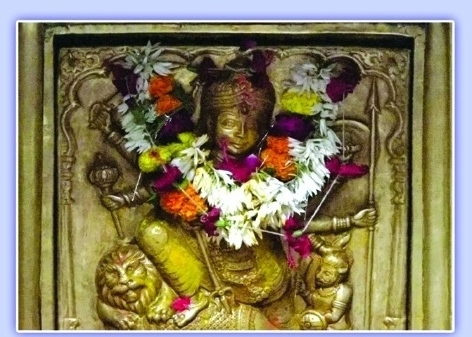

<?xml version="1.0" encoding="UTF-8"?><rss version="2.0"
	xmlns:content="http://purl.org/rss/1.0/modules/content/"
	xmlns:wfw="http://wellformedweb.org/CommentAPI/"
	xmlns:dc="http://purl.org/dc/elements/1.1/"
	xmlns:atom="http://www.w3.org/2005/Atom"
	xmlns:sy="http://purl.org/rss/1.0/modules/syndication/"
	xmlns:slash="http://purl.org/rss/1.0/modules/slash/"
	>

<channel>
	<title>Katyayani &#8211; Varanasi Temples</title>
	<atom:link href="index.html" rel="self" type="application/rss+xml" />
	<link>../../../../index.html</link>
	<description>Temples of Varanasi as referred to in Kashi Khand</description>
	<lastBuildDate>Thu, 19 Jun 2025 05:16:46 +0000</lastBuildDate>
	<language>en-US</language>
	<sy:updatePeriod>hourly</sy:updatePeriod>
	<sy:updateFrequency>1</sy:updateFrequency>
	<generator>https://wordpress.org/?v=4.6.29</generator>
	<item>
		<title>KATYAYANI</title>
		<link>../../../../devi-temples/katyayani/index.html</link>
		<pubDate>Tue, 11 May 2010 10:10:48 +0000</pubDate>
		<dc:creator><![CDATA[admin]]></dc:creator>
				<category><![CDATA[Devi Temples]]></category>
		<category><![CDATA[Katyayani]]></category>
		<category><![CDATA[atma]]></category>
		<category><![CDATA[goddess vikata matrika]]></category>
		<category><![CDATA[katyayani]]></category>
		<category><![CDATA[katyayani devi]]></category>
		<category><![CDATA[katyayani maha devi]]></category>
		<category><![CDATA[katyayini]]></category>
		<category><![CDATA[lord bhairav at kamakhya maa]]></category>
		<category><![CDATA[maa katyayani]]></category>

		<guid isPermaLink="false">../../../../p=596.html</guid>
		<description><![CDATA[According to Kashi Khand, Chapater 82, Once a kingdom was ruled by a very religious minded ruler named Amitrajit. He was a staunch devotee of Lord Vishnu and he made it a rule that all the citizens of his kingdom also become devotees of Lord Vishnu.  One day Narad Rishi visited his palace and was [&#8230;]]]></description>
				<content:encoded><![CDATA[<p>According to Kashi Khand, Chapater 82, Once a kingdom was ruled by a very religious minded ruler named Amitrajit. He was a staunch devotee of Lord Vishnu and he made it a rule that all the citizens of his kingdom also become devotees of Lord Vishnu.  One day Narad Rishi visited his palace and was welcomed with due respect by the King.</p>
<p>As per the direction of Narad Rishi, King Amitrajit saved one beautiful girl called Malayagandini from the clutches of one evil person. The King subsequently married her and they came to Kashi and were immediately happy with the beautiful surroundings.  In due course, Malayagandini was blessed with a handsome male child, who was destined to become 16 years old, immediately after birth.  However, since he was born in an inauspicious planetary combination, the Ministers of the King told the Queen that  she had to sacrifice the child, otherwise the King would die.</p>
<p></p>
<p>&nbsp;</p>
<p style="text-align: center;"><strong>(KATYAYANI DEVI)</strong></p>
<p>In order to save the King, she sent the child to Vikata Devi in Pancha Mudra Maha Peeth.  Vikata Devi summoned various Yoginis and asked them to take the boy to Matrika Devis with whose permission, the child should be spared.  Accordingly, the Yoginis took the boy to Matrika Devis, who after observing the divinity in the boy, ordered the Yoginis to take the boy back to Pancha Mudra Peet.</p>
<p>The boy was brought back to the Pancha Mudra peeth by the Yoginis where he started praying.   In nut shell, the boy had undertaken a short trip to heaven and returned.</p>
<p>Vikata Devi is known and worshipped as Katyayini Devi.</p>
<p>Maa Durga’s 6<sup>th</sup> form is Katyayini. She got this name on account of the following story.</p>
<p>When Demon Mahishasur’s cruelty became unbearable on earth, Lords Brahma, Vishnu</p>
<p>and Shiva gave a part of their energies and created a Devi to kill Mahishasur. Sage Katyayan was the first person to perform her puja and so she is called Katyayini.</p>
<p>Maa Katyayini grants wishes to her devotees without fail. To acquire Krishna as their husband, the Gopis of Braj had performed her puja on the banks of  Kalindi Yamuna. She is regarded as the supreme saviour Goddess in Braj (Mathura-Vrindavan).</p>
<p>Her form is supposed to be very simple and divine. Her colour is golden and radiant. She has four hands. Her upper right hand has the posture assuring safety or protection and lower right hand grants wishes. She has a sword in her upper left hand and a lotus flower in lower left hand. Her vehicle is lion.</p>
<p>Katyayini Devi blesses her devotees who are freed from any sort of disease, sorrow, fear and suffering. They radiate a supernatural energy.</p>
<p>&nbsp;</p>
<p><strong>Please watch our YouTube Video about Katyayani Devi at following Link</strong></p>
<p>&nbsp;</p>
<p><a href="https://www.youtube.com/watch?v=7i5RVjROvbQ&amp;t=68s">https://www.youtube.com/watch?v=7i5RVjROvbQ&amp;t=68s</a></p>
<p>&nbsp;</p>
<p><strong><span style="text-decoration: underline;">LOCATION OF KATYAYANI DEVI</span></strong></p>
<p>Katyayini Devi is located in the premises of Atma Veereshwar Temple at Ck-7/158, Scindia Ghat which is a famous locality in Varanasi. One can reach this place by boat through Scindia Ghat.  Alternatively one can travel in cycle rickshaw upto Chowk and walk down the gullies to reach the temple.</p>
<p><strong>LOCATION OF ATMA VEERESHWAR TEMPLE AS PER GOOGLE MAPS IS GIVEN BELOW</strong></p>
<p><a href="https://www.google.com/maps/place/Atmaveereshwar+Mahadev+Temple/@25.3125278,83.0128632,17z/data=!3m1!4b1!4m5!3m4!1s0x398e2e21e76c84cd:0x85f47e9834ede7f8!8m2!3d25.3125445!4d83.0150575">https://www.google.com/maps/place/Atmaveereshwar+Mahadev+Temple/@25.3125278,83.0128632,17z/data=!3m1!4b1!4m5!3m4!1s0x398e2e21e76c84cd:0x85f47e9834ede7f8!8m2!3d25.3125445!4d83.0150575</a></p>
<p><strong>The entire vicinity comes under the religious boundary of Pancha Mudra Maha Peeth.  Any kind of pooja or archana is said to yield multiple results.</strong></p>
<p>Katyayini is one of the Nine Durgas and devotees throng this temple on the 6<sup>th</sup> day of Navaratri falling in September-October.</p>
<p><strong><span style="text-decoration: underline;">TYPES OF POOJAS</span></strong></p>
<p>The temple is open for worship 05.00 a.m. to 11.30 a.m. and from 12.30 p.m. to 9.30 p.m.  Special Aarti is held from 07.00 to 8.30 p.m.  For doing special pooja, it is advisable to consult the Poojari before hand.</p>
<h2></h2>
]]></content:encoded>
			</item>
	</channel>
</rss>
